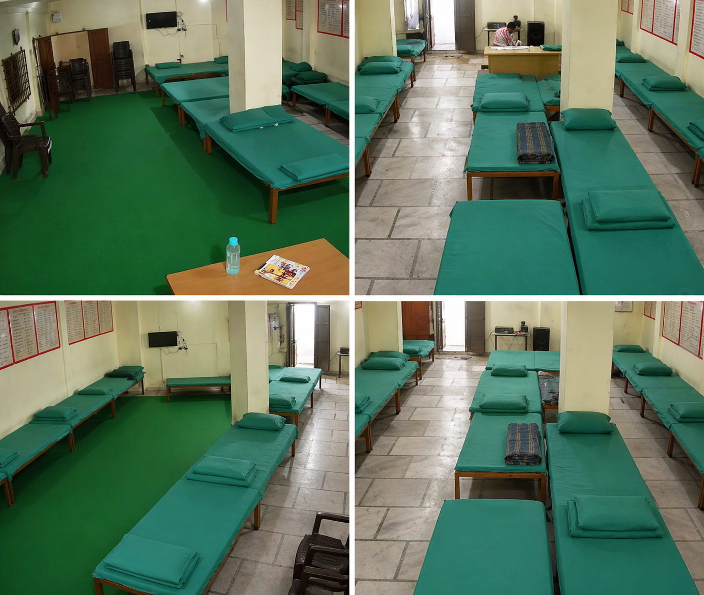
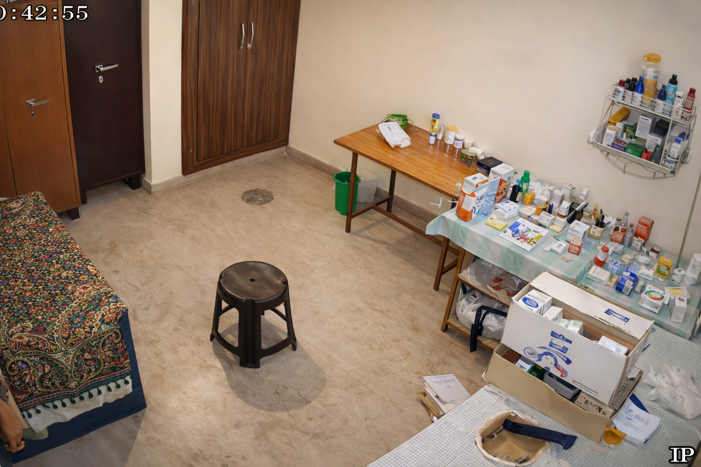
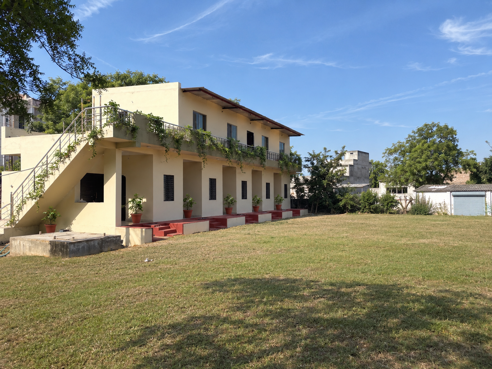
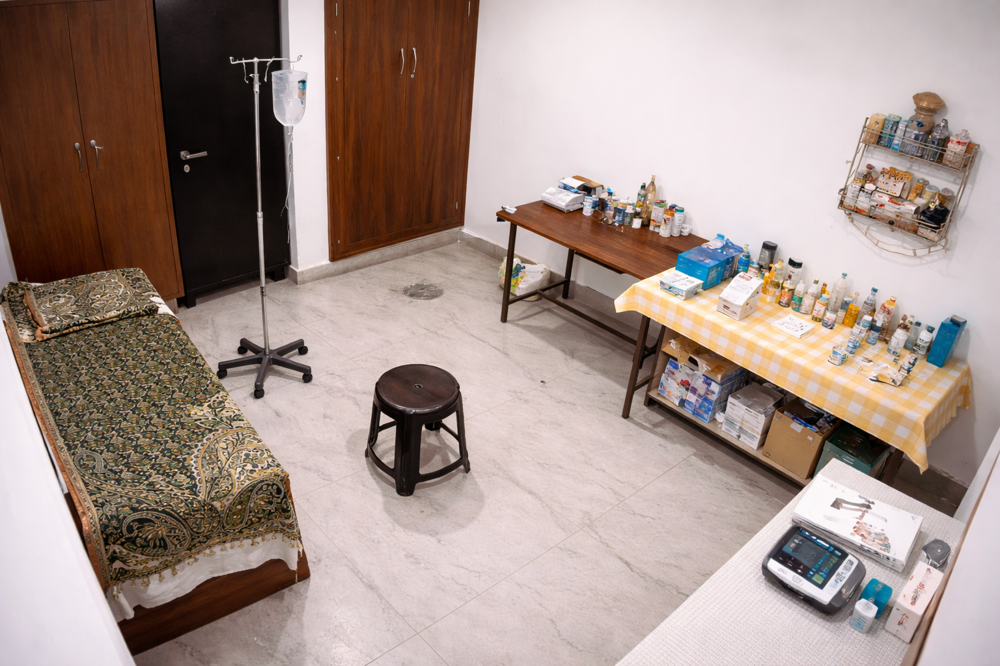
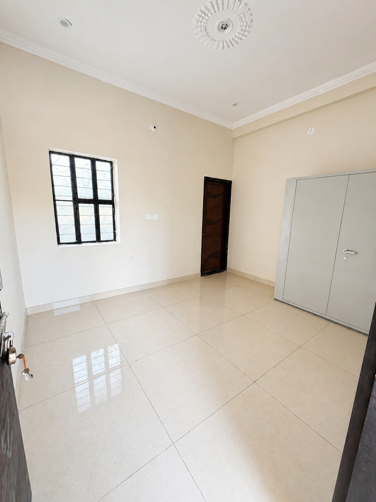

Treatment Programs Designed for You
Every individual is different — so is every recovery plan. Explore our complete range of de-addiction services.

Step 1 · BhankrotaMedical Detoxification
Supervised withdrawal management under 24x7 doctor and nursing supervision, with medicines to manage withdrawal symptoms comfortably.
- 24x7 medical supervision
- 2 dedicated detox rooms
- Nutrition & hydration therapy

Core TherapyCounselling & Psychotherapy
One-on-one and group counselling by trained psychologists to uncover root causes and build a strong, addiction-free mindset.
- Individual counselling
- Group therapy sessions
- Cognitive behavioural therapy

HolisticYoga & Meditation
Daily yoga, pranayama and guided meditation to calm the mind, reduce cravings and restore physical and mental balance.
- Daily yoga & pranayama
- Guided meditation
- Spiritual wellness sessions

Health CareMedical & Psychiatric Care
Psychiatric assessment on admission and regular health check-ups to treat co-existing conditions like anxiety, depression and insomnia.
- Psychiatric evaluation
- On-call medical officer
- Medication management
 For Families
For Families
Family Support Program
Addiction affects the whole family. We provide counselling, education and guidance so families can heal and support recovery together.
- Family counselling
- Awareness sessions
- Relapse prevention guidance

Step 2 · KeshupuraRehabilitation & Aftercare
Skill development, fitness, art therapy and lifelong aftercare support groups to help patients rebuild careers and relationships.
- Vocational training
- Fitness & recreation
- Support groups & follow-ups